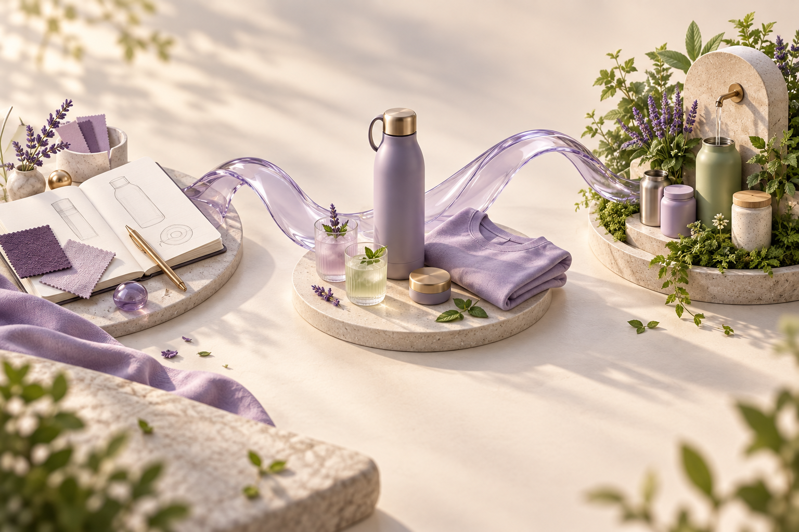

One idea.
A connected journey.
Shape it, try it, connect the people and bring it into everyday life. Each step builds on what you have already explored.
Start or continue
Your work stays in this browser. Save as you go and download a backup to keep it.
What would you like to bring to life?
Begin with your own idea, or open a case study to see how one idea travels through the whole process.
All nine case studies are available in the selector above.
Your route through the idea
Follow the steps or jump to what interests you. Return whenever something changes.
Saved versions and record details
A living plan.
Samples, conversations and real use can change the idea. Revisit any step and keep learning in the same record.
This workbench helps you prepare and connect your plans. Shared accounts, live agents, orders and payments remain future integrations.
Explore the wider product engine ↗